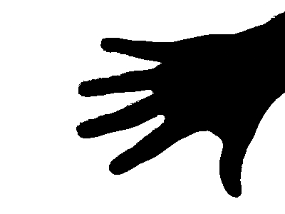

Binary Image Analysis
Problem Definition
Given a binary image (e.g. hands or tumor images), we try to find connected components and label each object. We try to detect boundary and skeleton of an object. We also calculate object area, orientation, circularity, and compactness for each object.
Method and Implementation
-
Connected Component Labeling: Scan every pixel in the image, find a pixel which is not background. After finding the pixel, we label the pixel as 1 at first. Then, we push the pixel in the stack and find neighbors whether they have same intensity value. If so, the neighbor also is pushed into stack and assigned the same label. Pop an item from the stack and keep search for neighbor’s of neighbors. After stack is empty, we increase the label count and find another pixel that needs to be labeled.
-
We first added a padding of size 1px to the original image in order to be able to progress with the boundary following algorithm discussed in class. We implemented the boundary following algorithm by finding the first black pixel and start following the boundary.
-
After we labeled all the objects from sequential connected component labeling, we passed the set of objects to compute its area by counting the number of pixels, orientation by computing Emin and Emax.
We then compute the circularity by Emin/Emax. For compactness, we run the boundary following algorithm to get the perimeter for any object. Then the compactness is computed.
-
Scan every pixel in the image, find a pixel which is not background. After finding the pixel, we compute the closest distance from any background pixels. Then, we compare this distance with distances from it neighbor’s to background. If it is bigger than that of neighbor’s, we classify it as a skeleton pixels.
Experiments and Results
We tested our implementation on the four sample images.The results are in the table below.
| Examples | Source | Labeling | Boundary Following | Skeleton |
| Example 1 |  | |||
| Example 2 |  |
|||
| Example 3 |  |
|||
| Example 4 |  |
 |
For are orientation an circularity,we got the following results:
| Image | Results |
| Perimeter = 1316.53108 Area = 30095.5 Compactness = 57.5918 Orientation = -40.1668 Circularity = 0.814714 | |
| Perimeter = 280.6101 Area = 2568.5 Compactness = 30.6568 Orientation = 33.566 Circularity = 0.47468 |
| Perimeter = 683.22 Area = 23390 Compactness = 19.95 Orientation = 8.195 Circularity = 0.274 Perimeter = 1190.35 Area = 30371 Compactness = 46.65 Orientation = -2.513 Circularity = 0.25 |
| Perimeter = 569.0437 Area = 7575 Compactness = 42.7472 Orientation = 34.8595 Circularity = 0.29328 |
Discussion
For preprocessing, we use dilation and erosion to remove noises and filling holes in an object. Our labeling algorithm becomes slow when there are too many objects in the image. So, we filter small objects and erosions.
Segmentation
Problem Definition
Given frames in a video, we try to detect, segment and track certain object in the frames (e.g. Task 1: hand, task 2: bat, or task 3: people) with methods we learned from classes.
Method and Implementation
-
For the piano dataset,we first found out the mean frame of the image set. Then we subtracted each frame from the mean frame . This left us with only the parts with movement in the image. Now to separate the hands from the rest of the part we use thresholding and skin color detection.Now we know that the hands are on the left part of the image.So we can just focus on the left part and use the cv2 contour function. Now we take the largest two contours (which denote the hand) and draw bounding boxes around them.
-
For the bat dataset,we start with grayscaling the image. After that we apply adaptive thresholding to the image to identify the bats present in the image.The we use the opencv contour method and drew bouding boxes around contours with large enough area. To identify the status of the flight/ wing position we use the circularity and compactness.
-
To detect people in the videos we followed frame subtraction approach.We then use the mean frame for background subtraction.After this we used a similar thresholding ,specifically in the 60-255 range. This was followed by opening the image.We then used opencv's contour function and cap the area limit on the contours we accept. We found the appropriate through experimentation. We then just draw bounding boxes around the remaining contours.
Examples Source Segmented Piano Bat Pedestrian 
Discussion
The piano dataset is a bit challenging because of the changes in lighting and shadows within the frames. Also the frames are not consecutive so straightforward background subtraction is not very feasible. To get around these hurdles, first we calculated the mean frame of the image set. After that we subtract each frame from the mean frame. This removes all the static part of the images and what we are left is are some parts of the piano and pianist. Now to separate out the hands , we used skin color detection using the RGB thersholds given in the lab session. After that we could use contouring to find the hands in the left part of the image.
In the bat dataset, as background changes, it is better to use adpative thresholing. If bat is too small or far from a camera, it is hard to tell if it is unfolded and there are multiple bats in the region. We set threshold for determining if it is folded emprically with circularity, so that the system does not detect the foldness very well for small obejcts
In the pedestrian dataset, we tried out multiple models to find the bounding boxs for people in all the frames. However the best approach turned out to be straightforward frame subtraction. We subtracted each frame from mean frame and found contours on the resulting image. We still could not get around the people being occluded by the pole though as it's not present in the mean frame.Drawing bouding boxes on contours that are big enough work very well.
Conclussion
We first implemented our own version of getting the first/second moments and circularity of objects. We implemented the sequential labeling and boundary following algorithm. We applied these algorithms and methods to the given four images.
For segmenting out hands, our methology works very well at least for the image set we have. Identifying the ROI to be on the left side of the image post thersholding and subtraction may not generalize but works well for this.
For the bat data set, we found that adaptive thresholding works very well on the chages of backgrounds. We detected most of bats except very small bats. We also successfully detect whether it is folded with a appropriate threshold on circularity, and regions where multiple bats exist.
For the person detector task, we used background subtraction and are able to identify the majority of people given no occlusion. Occlusion may still majorly affect the performance of the model even with our fine tuned parameters.
Credits
- https://opencv-python-tutroals.readthedocs.io/en/latest/